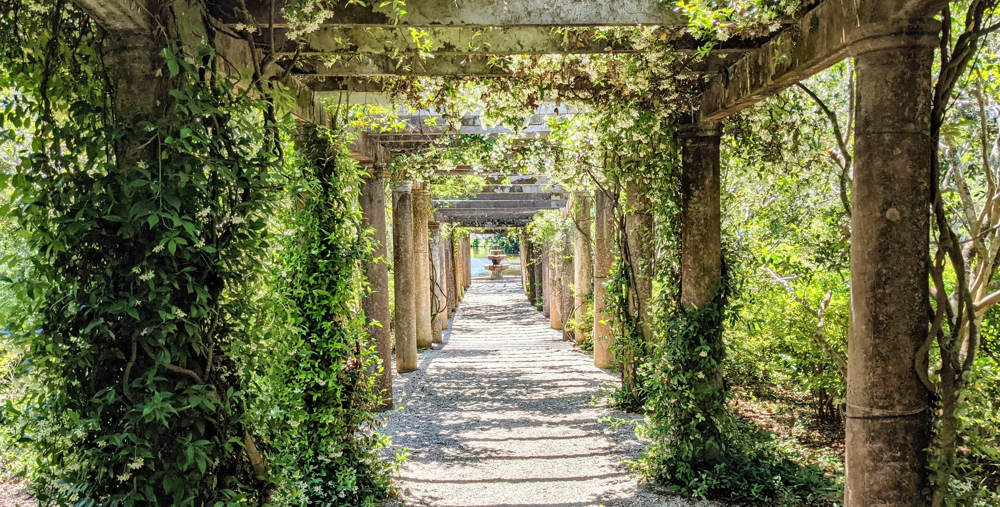
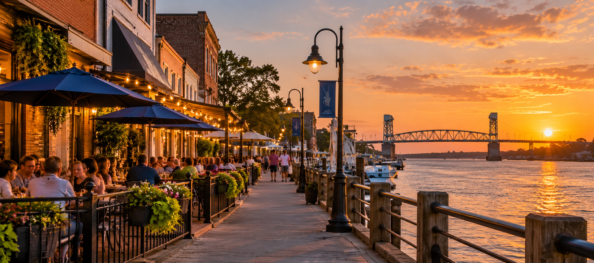

Welcome to Wilmington
Welcome to Wilmington, North Carolina, where historic downtown streets meet the Cape Fear River and the coast is only a short drive away. This guide will help first-time visitors discover some of the places, experiences, and local flavors that make Wilmington worth exploring.

Photo by Avi Waxman - UnsplashExplore the Port City
From the Riverwalk and historic downtown to gardens, beaches, and local landmarks, Wilmington offers plenty to explore during a weekend visit.
Explore Wilmington →
Photo by OpenAI - ChatGPTEat & Drink
Wilmington's food and drink scene includes local restaurants, coffee shops, breweries, and plenty of places to stop between adventures.
Find places to eat & drink →